记“你得的奖金数”，则在开奖前 的值可变（还未定），所以是一个“变量”， 到底取何值（开奖后的结果）依赖于机会。因此， 是一个“机会变量”或称“随机变量”。表 1.1 给出了 可能取的值及其相应的概率，称为 的“概率分布”。概率分布是随机变量的最完整的描述。正如在本问题中，你要想完整地了解这个奖的状况，就得了解表 1.1。
记“你得的奖金数”，则在开奖前 的值可变（还未定），所以是一个“变量”， 到底取何值（开奖后的结果）依赖于机会。因此， 是一个“机会变量”或称“随机变量”。表 1.1 给出了 可能取的值及其相应的概率，称为 的“概率分布”。概率分布是随机变量的最完整的描述。正如在本问题中，你要想完整地了解这个奖的状况，就得了解表 1.1。1.5 概率分布
对一张奖券，不仅是获奖概率的大小问题，更重要的是各等奖金的数额及获得各等奖概率的大小。假定某个奖有 4 个等级，奖金分别为 10 000 元、1000 元、100 元、10 元，而获得这些等级奖的概率依次为 0.000 01, 0.0001, 0.001, 0.01，不得奖（奖金为 0 元）的概率是
1-0.000 01-0.0001-0.001-0.01=0.988 89
把这列成一张表（见表 1.1），这就构成了对这个奖最完整的描述。
表 1.1 某奖券的获奖概率
| 奖金数 | 10 000 | 1000 | 100 | 10 | 0 |
| 概率 | 0.000 001 | 0.0001 | 0.001 | 0.01 | 0.988 89 |
当你买一张奖券时，你可能得到的奖金可以是上表中的 5 个奖金数之一，具体要看你的运气如何。所以，若用符号 记“你得的奖金数”，则在开奖前 的值可变（还未定），所以是一个“变量”， 到底取何值（开奖后的结果）依赖于机会。因此， 是一个“机会变量”或称“随机变量”。表 1.1 给出了 可能取的值及其相应的概率，称为 的“概率分布”。概率分布是随机变量的最完整的描述。正如在本问题中，你要想完整地了解这个奖的状况，就得了解表 1.1。
一商店每天向工厂进一批货，共 100 件，这里面会有若干件为不合格品而无法售出。以 记一批货中的不合格品数，设最大不会超过 6，则 可以取 0, 1,…, 6 这 7 个数值。单知道这个还不够，还要看 取这些值的机会大小如何。如 取 0，1 这些小值的概率很大，而取 4，5，6 这些大值的概率很小，则该厂供货的质量甚优，反之就不好。若分别以
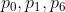
记 取 0, 1,…, 6 的概率，则可列成一个表（见表 1.2）。表 1.2 不合格品数  的概率分布
的概率分布
| 不合格品数 | 0 | 1 | 2 | 3 | 4 | 5 | 6 |
| 概率 | 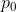 |  | 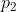 | 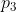 | 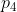 | 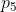 | 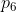 |
这就是不合格品数 的概率分布，构成了对工厂供货质量的完整了解。
概率分布中“分布”一词，指明全部概率（即 1）是如何分布在（分配到）随机变量 的各个可能值上的。它其实是一个很普通的用语。比如说某地区人口的年龄分布，就是指明各年龄段内的人口数占该地区人口总数的比率如何。在此，年龄 是变量，而比率就是概率。又如说我国大中型企业的地域分布情况，这里把不同地域用不同数字代替（以便将“地域”这个因素数量化），各个地域中大型、中型企业占全国大中型企业总数的比率，相当于取各个数字的概率，因而也可以用概率分布的语言去描述它。
实际问题中往往牵涉到一个或多个机会变量。了解机会在其中起作用的全部情况，也即其概率分布，常有基本的重要性。如人寿保险，保险公司不是只有 1 名或少数顾客，它面对的是很大的一群人，他们的寿命分布如何，比如说，一个已活到 50 岁的人，他再活 5 年、10 年、15 年等的机会如何，直接关系到保险公司赔付各种数量金额可能性的大小，而这又决定投保的条件。一个大的系统由各种元件以不同方式（并联、串联等）结合起来，元件的寿命是随机变量，各种元件的寿命分布，结合该系统的构造，就能决定该系统的可靠性（即正常工作的概率）。又如某地区有 10 000 人，要开一个邮局，问题是该邮局应设多少窗口。设得太少，顾客经常排长队，造成不便；设得太多，不少时候会有空闲，造成浪费。要定下一个合理数目，就需要了解在任一特定时刻顾客人数 （这受机会的影响，是一个随机变量）的概率分布。了解这个概率分布，就可以把窗口数定得满足一定的要求，比方说，有 5 个以上的人排队的机会不超过 0.05。再例如服装生产，有各种不同尺寸，各种尺寸的服装的生产量该占多大的比率？要回答这个问题，需要了解一些人体参数（如身高、腰围之类）的概率分布情况。
有的随机变量可以取很多的数值。例如，一大群人（例如，全国在校大学生，30 岁以下的现役军人等）的身高，可以取很多数值。还有一个度量单位的问题。通常在量身高时精确到厘米，但有时这还不够。由于可能取的数值太多，要一一列出取各个值的概率，不仅在表达上极其烦琐，更重要的是，在这种烦琐的表述下掩盖了概率分布的特点，于应用上很不利。因此，对这种变量，我们不采取逐一列举其概率的办法，而是设法定出如图 1.2 那样的一条曲线，称为概率密度曲线。此曲线位于一条横轴的上方，它与横轴一起所围成的面积为 1（表示全部概率为 1），而变量落在指定的两个数  和
和  之间的概率，就是图中用字母
之间的概率，就是图中用字母  标出的那一块条形的面积。如在人身高的例子中，若
标出的那一块条形的面积。如在人身高的例子中，若
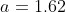
米，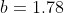
米，则 这块面积表示该人群中随意挑出的一个人，其身高在这两个界限之间的概率。或说得更清楚些，是该群人中身高在 1.62 米到 1.78 米之间者的人数，占该群人数的比率。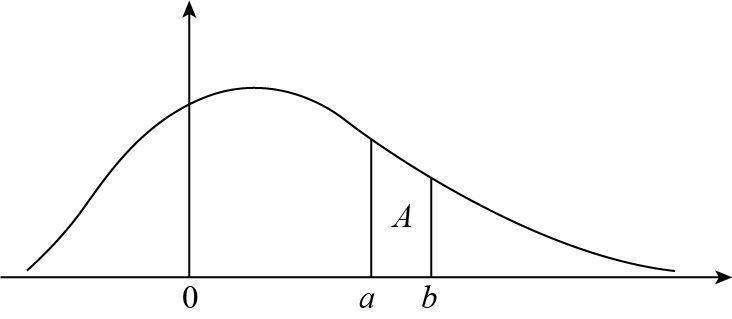
图 1.2 概率密度曲线
曲线的形式多种多样。形式过于复杂的，在应用上不便。有几种形式较简单的曲线在实际问题中很常用，其中最重要的一种叫作“正态曲线”，又常称为“高斯曲线”，其所代表的概率分布，就称为正态分布或高斯分布。高斯（1777—1855）是德国数学家。
“两头低，中间高”是一个极常见的现象。人的身高体重，取两头极端值的为少数，而在中间某个界限之内者居多。学生的成绩，特别好或特别差的一般为少数，多数是在中间段内。在贫富差距不很大的人群中，收入很高或很低者比例较小，占大头的是处在中间的情况，这要算一个比较显著的统计性的规律。但这种过于一般化的说法，对认识世界的意义不大。高、中、低的区分，在具体问题中总是人为的，标准不同，这几部分的比率也不同。因此，如果说把这个现象作为一个统计规律去看待，则需要赋予它更确切的内容。
比如，考虑“中国成年男性身高”这个指标，如果把高、低界限分别定在 1.90 米和 1.50 米，则中间的当然是大多数；若将界限分别定在 1.75 米和 1.65 米，则情况就两样了。正确的理解是这样：这个指标有一个峰值，比如在 1.72 米左右，以此往高的方向推，每单位区间内的人数呈下降的趋势；往低的方向推，每单位区间的人数也是呈同等程度的下降趋势。确切一点说，曲线有一个最高点，其在横轴上的投影为图 1.3 中的
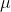
。图中的符号 将在后面做解释（、 都是希腊文字母）。在 的两边，曲线呈下降趋势且是对称的。仅此还不足以完整地描述正态曲线。要做出完整的描述，必须写出其精确的数学方程式，但其形式需要懂得高等数学才能了解，这里就只好略去了。
将在后面做解释（、 都是希腊文字母）。在 的两边，曲线呈下降趋势且是对称的。仅此还不足以完整地描述正态曲线。要做出完整的描述，必须写出其精确的数学方程式，但其形式需要懂得高等数学才能了解，这里就只好略去了。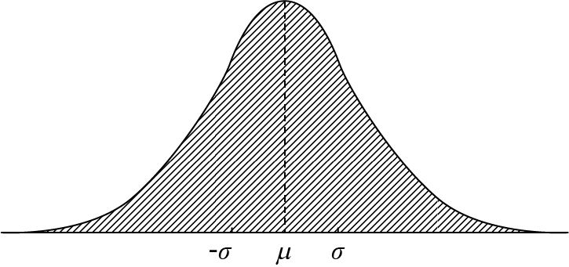
图 1.3 正态曲线
正态曲线不是指一条固定的曲线，而是指许多同一类型的曲线，其形状上的差别，完全取决于上文提到的符号 。在图 1.4 中给出了两个正态曲线。左边的一条陡峭，对应于较小的 值；右边的一条较平缓，对应于较大的 值。在两条曲线中，对应的 值都是 0。图上标出的数字±1,±2,±3,…，都是以 为单位——2 就是指
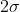
。右边曲线的 大，因此 2 离 0 的距离，也比左边曲线 2 离 0 的距离要大些。在实际应用中，要定出一条正态曲线，需要把 和 这两个数值定下来，这往往要借助于对有关现象进行观察所得的数值，在统计学上称为样本。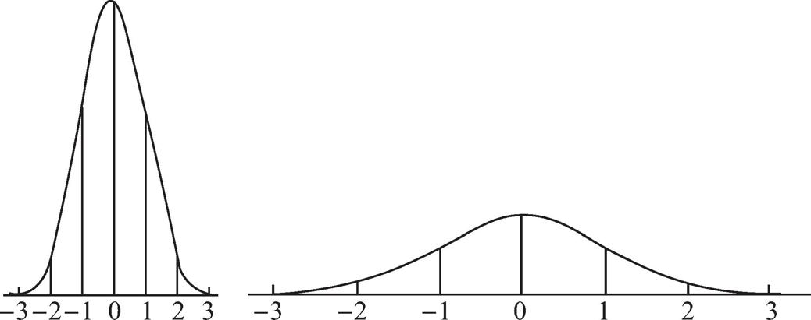
图 1.4 不同 的正态曲线
为什么正态曲线在应用上有重要的地位？这是由于它有很大的普适性，能用于描述很多自然和社会等方面的现象。前面讨论的“两头低、中间高”这种规律，显示了这一点。更深一层次的原因，在于概率论中一个深刻的理论性结果，它表明，如果一个量的形成受到众多因素的影响，而其中任一单个因素起的作用都很有限，则这个量的概率分布，必可用正态曲线（近似地）去描述。此结果在概率论上叫作“中心极限定理”（其名称就显示了其重要性）。例如人的身高、体重、智商，对一个对象反复测量的误差，其形成原因都是多样化的，且单个原因起的作用都有限，因此其概率分布就接近于正态。
从历史上说，正态分布的发现，经过了若干大学者的努力。最早的发现者是 18 世纪 30 年代的法国概率论学者棣莫弗，他是在研究对一个概率做近似计算时发现这个分布的。但是，他只是把它作为一个近似计算的工具，而并非作为刻画随机现象的概率分布。之后，有几位学者从其余的途径得出这条曲线，但都未把它提到概率分布这个角度去看。直到 1809 年，德国的大数学家高斯，在研究测量误差的概率分布时，才第一次以概率分布的形式把这个分布提出来，所以这个分布有了“高斯分布”的名称。原来的德国货币马克上，印有取得伟大成就的科学和艺术名人的头像，其中 10 马克的钞票上就是高斯的头像，并附有一条正态曲线。高斯是一位在数学、统计学和天文学等方面都有许多杰出成就的伟大学者，但德国在设计钞票时却突出了正态分布这一项，可以看出人们对他这一项成就评价之高，以及这项成就对人类文明的重要性。
当高斯在 19 世纪初发现正态分布时，其应用还只限于天文和大地测量中的误差处理问题。到后来，经过一些学者，如比利时天文学家兼社会学家凯特勒、英国遗传学家高尔登等人的工作，正态分布的应用迅速扩大到许多自然和社会科学领域，这种状况在很大程度上一直延续到今日。如果说，充斥着偶然性的世界是一个纷乱的世界，那么，正态分布为这个纷乱的世界建立了一定的秩序。由于它，许多偶然性现象得以在数量上是可计算和预测的。